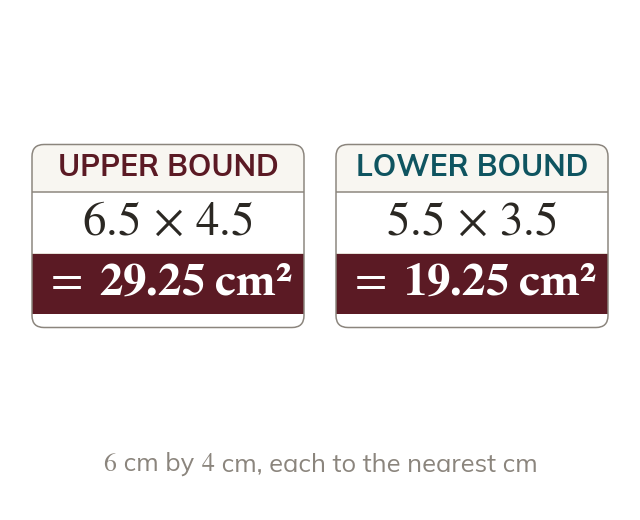

Biggest with biggest
A sum or product is largest from both upper bounds. It is smallest from both lower bounds.
A sum or a product is largest when both values are at their upper bounds. It is smallest when both values are at their lower bounds.